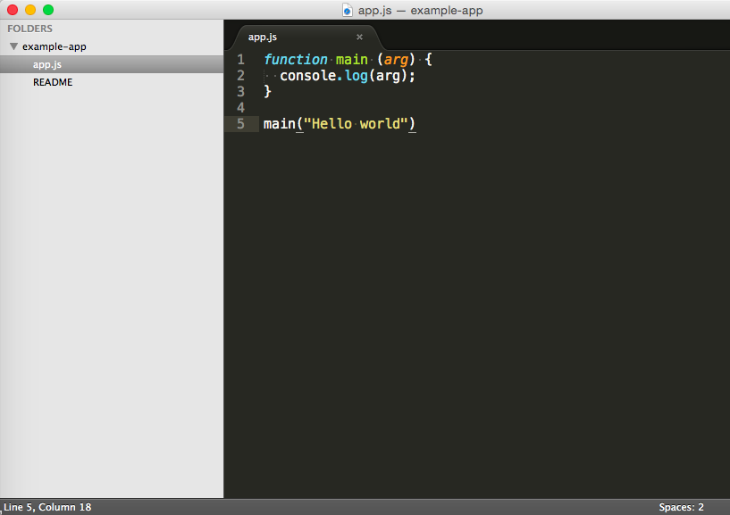

Git Collaboration
.. in a hackathon
Created By
Varun Maliwal / @vroom_
Software Engineer @ Capital One
Agenda
- Git internals
- Useful git commands
- Workflow
What is Git?
- A distributed version control system
- Full history support
- Version-tracking support, independent of central server
Git Repository
.git subdirectory is called as repository
What does .git include?
- commit objects
- HEAD
- index
- ..more..
.git can be opened and modified in text editor
Getting a Git repository
- Initalize Repository into existing directory
- Cloning Repository from remote server(github, bitbucket, etc.)
Initializing Repository
$ mkdir [project-name]
$ cd [project-name]
$ git init
git-example/
.git/
config
description
HEAD
hooks/
info/
objects/
refs/
Cloning existing repository
$ git clone [git-url]
$ git clone https://github.com/vmaliwal/git-collab.git
Commit Objects
Git is DAG that holds snapshots of commit objects as nodes
What does commit object hold?
- reference to parent commit, if any
- tree - set of files conveying current state of the project
- author info, commiter info, commit message, etc.
Commit object is uniquely identified by a 40-character SHA1 hash
Creating a commit object
Create a new file or modify existing
$ echo "Introduction to Git" > README
$ git status
# On branch master
#
# Initial commit
#
# Untracked files:
# (use "git add [file]..."
# to include in what will be committed)
#
# README
$ git add [file-name]
$ git commit -m "Initial commit"
Also
$ git add .
$ git commit -a -m "Initial commit"
My personal workflow
- Intialize/Clone repo.
- Make changes
- $ git status - to verify what files I have changed
- $ git diff [file-name] - to review a change made in a specific file
- $ git commit -a -m "commit message"
Branching
- Collection of commit objects
- Default branch is master
(1) -- (2) -- (3)
|
master
|
HEAD
HEAD points to commit (3) on master branch
Switching to a new branch
# creates a new branch
$ git branch [new-branch-name]
# move HEAD to point to new branch
$ git checkout [new-branch-name]
$ git checkout -b [new-branch-name]
My personal workflow
- Create a new branch
- Make code changes
- Commit changes
- Run tests on code
- If test success merge those changes back to master branch
Merging
$ git merge [branch-name]
Before merging
bug-fix
|
+----(4)----(5)
/
(1) -- (2) -- (3)
|
master
|
HEAD
$ git merge bug-fix
bug-fix
|
+----(4)----(5)+
/ \
(1) -- (2) -- (3)----------(6)
|
master
|
HEAD
(6) contains changes between (5) and (2) merged into (3)
How to Collaborate?
- Remote repository
- Pull remote changes
- Push local changes to remote
Remote repository
- Create a new remote repository(on github, bitbucket, etc.) and clone to your local machine. Or,
- Add existing git repo from your local machine to remote
How to create a remote repo?

How to create a remote repo?

Clone to your machine
$ git clone [git-remote-repo-url].git
As name suggests clone command can be used to clone any remote repository
Add existing repo
- Create new repository on github or bitbucket
- On your local machine..
$ git remote add origin [git-remote-repo-url].git
$ git push origin master
origin is a remote repository reference that git uses
Pulling remote changes
$ git pull [remote-repo-reference] [remote-branch-name]
$ git pull origin master
Pushing changes to remote
$ git push [remote-repo-reference] [remote-branch-name]
$ git push origin master
.gitignore the unsung hero
- It is very important to have this file in your project root directory to avoid merge conflicts from auto-generated code from VM, IDE, etc.
- Google for gitignore nodejs/golang/java/android/iOS
Merge conflicts
While pulling or merging a branch merge conflicts can occur due to conflicting changes
$ git checkout -b develop
$ git branch
* develop
master
$ git checkout master

$ git merge develop
Auto-merging app.js
CONFLICT (content): Merge conflict in app.js
Automatic merge failed; fix conflicts and then commit the result.
$ git mergetool

My personal collaboration workflow
- Create new remote git repository
- Intialize git into existing project(if exist and skip step 3)
- Clone remote repository into local machine
- Add project/framework specific .gitignore file
- $ git commit -a -m "initial commit"
- $ git push origin master
- Make sure master branch only contains runnable/working code
- Create develop branch $ git checkout -b develop
- Add new changes, if any, and push develop to remote $ git push origin develop
..continue
- Ask developer friend to clone remote repository
- Crank out more code
- Commit changes
- If pushing to remote make sure to pull if there are any existing commit on remote
- If code looks okay, merge develop to master